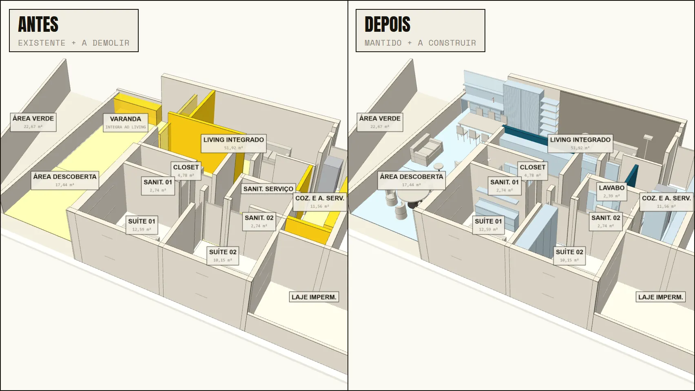
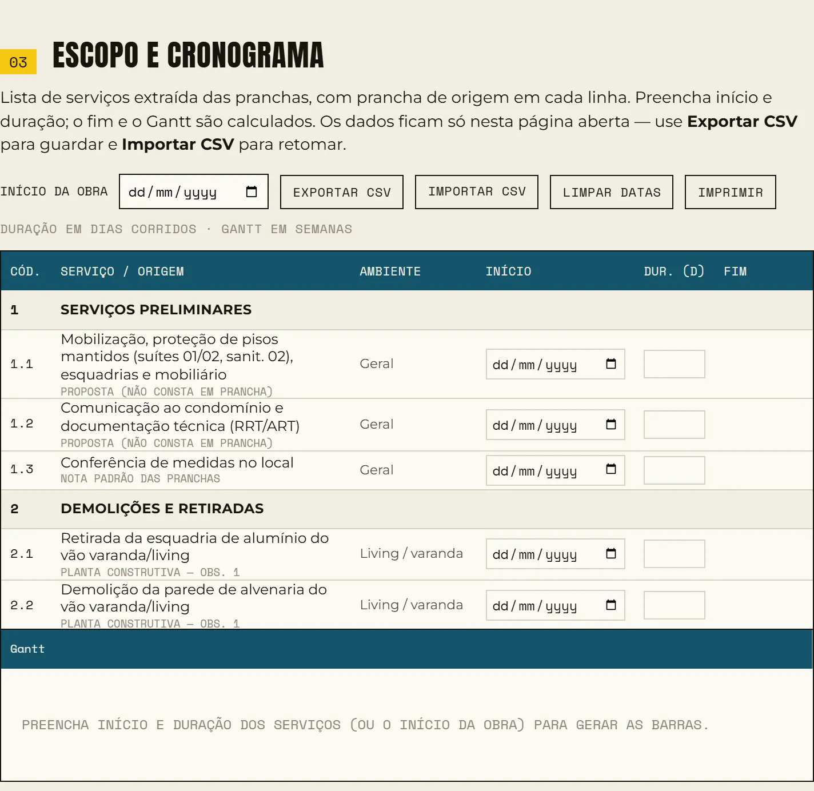
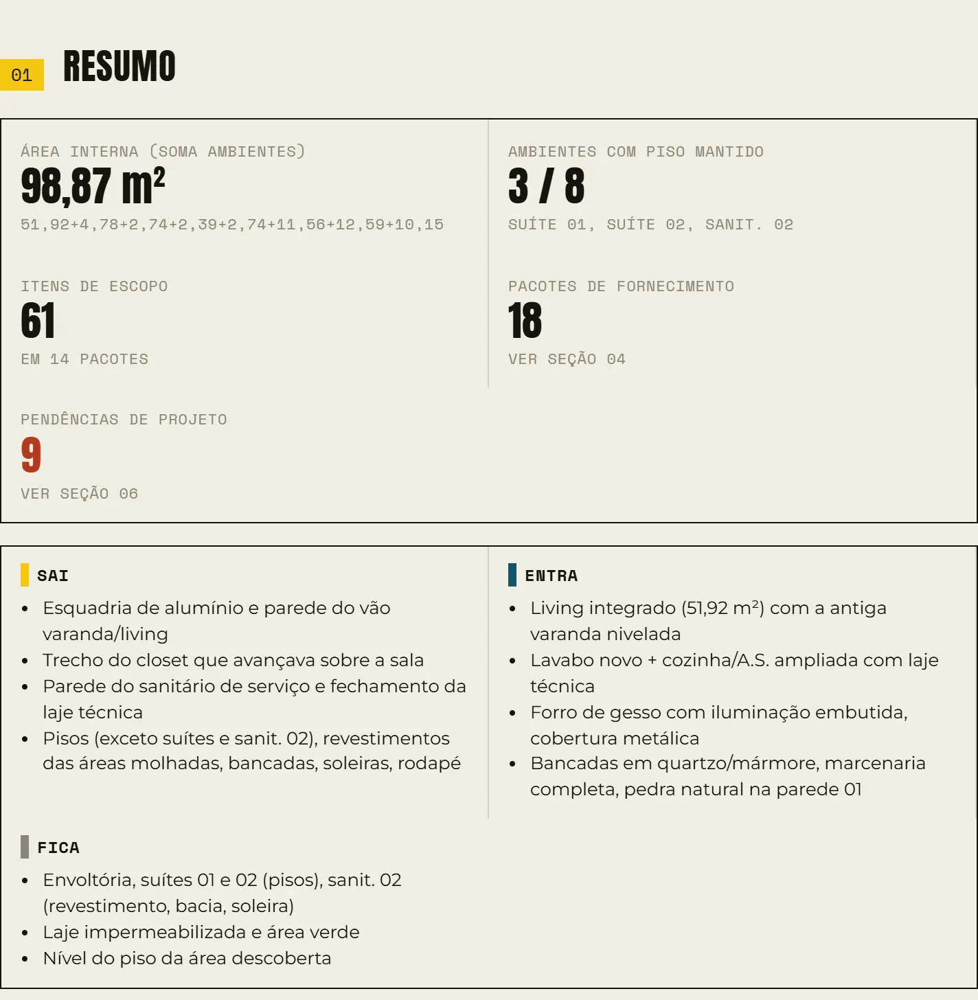

Passo 01 de 04 · Definição de escopo de reforma
Escopo da reforma com antes e depois a partir das pranchas do projeto
Ele lê as pranchas da reforma e devolve um relatório com o 3D antes e depois, o escopo com a prancha de origem em cada linha, o cronograma pronto pra você preencher e as pendências do projeto.
# Etapa 1/2 — Relatório de reforma: 3D antes/depois, escopo e fornecedores ## Contexto Sou [função — ex.: engenheiro responsável pela execução] de uma reforma de [tipo — ex.: apartamento residencial, ~100 m²]. O projeto de arquitetura de interiores está em: [pasta conectada ou "arquivos em anexo"]. Pranchas (PDF): [ex.: planta baixa construtiva com legenda manter/demolir/construir, planta de forro, elétrica, iluminação, paginação de pintura, detalhamentos construtivos (bancadas, louças, metais) e detalhamentos de marcenaria por ambiente]. Não identifique cidade, endereço, cliente ou escritório em nenhum entregável — use o código "[ex.: ABM]" para o projeto. Esta é a primeira de duas sessões. Nesta, não pesquise produtos nem faça quantitativos; isso fica para a etapa 2, que vai receber o HTML desta etapa como entrada. Deixe o arquivo preparado para isso (ver "Preparação para a etapa 2"). ## Entregável Um único arquivo HTML autocontido (abre offline, scripts inline, sem CDN obrigatório), salvo na pasta do projeto e enviado no chat. Nome: [PROJ]_Relatorio_Reforma_Antes_Depois.html ### Seções, nesta ordem 1. **Resumo** — área total (soma dos ambientes cotados, com a soma escrita), ambientes com piso mantido, nº de itens de escopo, nº de pacotes, nº de pendências; três listas curtas: "Sai", "Entra", "Fica". 2. **Visualização 3D antes/depois** (three.js inline), construída a partir da planta baixa construtiva na escala indicada: - duas vistas lado a lado com a mesma câmera; botões lado a lado / só antes / só depois; isométrica / planta; rótulos de ambiente com área, em tamanho fixo na tela; - modo "status": a manter / a demolir / a construir / piso a substituir / piso novo / piso mantido; - modo "acabamentos" no depois: pisos, paredes, forro, bancadas, marcenaria e metais com cor e textura procedural do material especificado em prancha (azulejo na dimensão real da peça, veios de pedra, madeira, ripado, textura, laca, inox, cromo, dourado, red gold etc.). Cores de tinta pelo código do fabricante, aproximadas, com a fonte da aproximação declarada. O que não estiver especificado em prancha aparece hachurado e marcado "A DEFINIR"; - mobiliário, marcenaria e louças como peças compostas, não caixas: sofá com encosto/braços/almofadas, cadeiras com pernas e encosto, poltronas, mesas, camas com cabeceira e travesseiros, bacias com caixa acoplada, bancadas com cuba esculpida, rodapia, traves laterais ou armário inferior exatamente como o detalhamento mostra, armários com portas/gavetas/ripado/nichos/básculas, box de vidro, chuveiro, cooktop e forno, máquina de lavar, geladeira, torneiras no acabamento certo. Dimensões anotadas nas pranchas; posição conforme o layout. Itens sem dimensão em prancha entram como volume indicativo e a nota diz isso; - portas e janelas existentes nos vãos da construtiva (pintadas na cor da paginação); - checkboxes: bancadas/marcenaria, mobiliário/louças, cobertura, forro, rótulos, acabamentos, corte a 1,20 m; - abaixo do visualizador, um **mapa de acabamentos**: amostra de cor, superfície/material, prancha de origem, estado "especificado" / "a definir"; - antes de fechar, **audite peça por peça contra as vistas e cortes dos detalhamentos** (forma, dimensão, material, cor, posição) e corrija. Me liste o que foi corrigido. 3. **Escopo e cronograma** — lista de serviços extraída das pranchas: código hierárquico, descrição, ambiente e **prancha de origem em cada linha**. O que não consta em prancha (mobilização, caçamba, impermeabilização, limpeza) marcado "proposta". Campos editáveis de início e duração; fim e Gantt simplificado (semanas, barra de resumo por pacote, linha de hoje) calculados; exportar/importar CSV; imprimir. 4. **Fornecedores sugeridos** — por pacote de contratação: itens, o que está especificado em prancha (só marcas e materiais que aparecem nos detalhamentos), tipo de fornecedor a procurar, referência ao escopo, três campos livres de cotação. Não invente lojas. 5. **Pendências e divergências** — o que as pranchas deixam em aberto ou que diverge entre revisões (material não especificado, áreas diferentes entre revisões, prancha de pintura contradizendo detalhamento, "a definir"), com referência ao item de escopo. Não estime nem complete. Rodapé com a lista de pranchas consultadas. ### Preparação para a etapa 2 - Cada elemento do 3D deve carregar uma **chave de acabamento** (ex.: `onix`, `carvalho`, `redgold`) e o nome da peça; o mapa de acabamentos usa as mesmas chaves. Deixe um objeto JavaScript `PRODUTOS = []` vazio e uma função que, ao clicar num elemento, abre um painel com nome da peça, prancha de origem e acabamento — a etapa 2 vai preencher `PRODUTOS` com as referências e exibi-las nesse painel. - Mantenha o catálogo de acabamentos (chave → descrição, prancha, especificado/a definir) legível no código, com comentário dizendo onde a etapa 2 deve inserir produtos. - No final da sessão, me entregue uma lista em texto com: todas as marcas/modelos/códigos que apareceram nas pranchas (metais, louças, porcelanatos, MDF por padrão, tintas por código, texturas, pedras, inox, box), o ambiente de cada um e a chave de acabamento usada no 3D. Eu vou colar essa lista no prompt da etapa 2. ## Identidade visual [Escolha: "use a identidade do meu escritório: paleta ____, fontes ____, carimbo de rodapé ____" / "fique à vontade, sóbrio, sem emoji e sem ícone decorativo".] ## Como trabalhar - Liste as pranchas e pergunte só o decisivo (qual projeto, formato de entrega). Depois siga até o fim. - Renderize e olhe o HTML (screenshots) antes de entregar; teste os botões, o Gantt com datas de exemplo e o modo acabamentos de perto (corte a 1,20 m). - A cada entrega, diga em poucas linhas o que foi extraído, o que a auditoria corrigiu e o que ficou pendente. Não repita o conteúdo do arquivo no chat. ## Exemplo de preenchimento (fictício — substitua) - Projeto RFX — apartamento residencial, 8 ambientes, 98,9 m² (soma das áreas cotadas). - Pranchas: construtiva rev. 01 e 02 (área descoberta diverge: 16,00 vs 17,44 m²), forro rev. 05, elétrica, iluminação, paginação de pintura, 5 detalhamentos construtivos, 12 de marcenaria. - Escopo típico: demolir esquadria e parede do vão varanda/sala; trecho do closet; parede do banheiro de serviço (vira lavabo); retirar pisos exceto suítes e um banheiro; bancadas novas em quartzo e mármore; forro de gesso 2,40/2,50 com rasgos de iluminação; cobertura metálica aprovada pelo condomínio; marcenaria completa; pintura acetinada em cor de catálogo. - Pendências esperadas: piso da sala "a definir"; rodapé "a definir"; comprimento da parede de pedra não cotado.
O que ele resolve
Fechar escopo de reforma é ler prancha por prancha pra descobrir o que sai, o que entra e o que fica. Quando isso fica só na cabeça de quem leu, o cliente não enxerga a reforma e o orçamento herda o buraco.
Esse prompt monta o 3D antes e depois a partir da planta construtiva e lista o escopo com a prancha de origem em cada linha, marcando como proposta o que não está em prancha. O cronograma sai com o Gantt vazio, esperando as suas datas, e o que o projeto deixa em aberto vira pendência: ele recusa estimar ou completar.
O que ele devolve






Role a tabela para o lado →
| Código | Serviço | Ambiente | Pendência | Prancha |
|---|---|---|---|---|
| 1.1 | Mobilização, proteção de pisos mantidos (suítes 01/02, sanit. 02), esquadrias e mobiliário | Geral | — | Proposta (não consta em prancha) |
| 2.2 | Demolição da parede de alvenaria do vão varanda/living | Living / varanda | — | Planta construtiva — obs. 1 |
| 2.7 | Retirada de revestimentos de parede: lavabo, sanit. 01, cozinha e área de serviço | Molhadas | — | Planta construtiva — obs. 6 |
| 3.2 | Nova parede lavabo / cozinha | Lavabo | — | Planta construtiva — legenda “a construir” |
| 6.1 | Forro de gesso H=2,50 m (living, closet, suítes) e H=2,40 m (molhadas, cozinha) | Geral | — | Planta de forro |
| 7.1 | Cobertura em estrutura metálica conforme modelo aprovado pelo condomínio | Área externa | Pendência Posição/limite a confirmar (áreas divergem entre revisões) | Planta construtiva — obs. 17/18 |
| 8.1 | Piso living integrado + antiga varanda | Living | Pendência Especificação não consta nas pranchas | Planta construtiva — tab. revestimento |
| 9.3 | Lavabo 1,30 × 0,50 em mármore Marrom Imperador c/ cuba esculpida | Lavabo | — | Detalhamento construtivo do lavabo |
Saída de exemplo · Relatório de escopo: 3D, escopo e cronograma · Dados reais anonimizados
Macete(ando o apocalipse)
- Esse processo tende a ser mais preciso depois que você configurar as skills e agentes. Te explico como fazer essas coisas na nossa newsletter, o Campo Minado. Só clicar aqui.
- O engenheiro da nova geração é, acima de tudo, responsável. Lembre-se que IA pode cometer erros. Use ela como um facilitador, não como verdade definitiva. O prompt organiza e explicita o cálculo — quem responde pelo número continua sendo você.
- Linha marcada proposta não saiu de prancha: é o modelo dizendo o que costuma ter numa reforma, tipo mobilização, caçamba, impermeabilização e limpeza. Confere se aquilo é seu, do condomínio ou de outro contrato antes de levar pro orçamento.
- A prancha de origem em cada linha é pra você abrir e conferir, não pra enfeitar. Modelo cita referência com muita confiança: pega uns itens no meio da lista e vai na prancha ver se o serviço tá lá mesmo.
- O resumo soma a área dos ambientes cotados, mas área que muda de uma revisão pra outra vira pendência, e ele não escolhe por você. Isso se resolve com o projetista, não com média nem com a revisão que fecha a conta.
- O Gantt aparece vazio de propósito: início e duração são campos pra você preencher, e fim e barras por pacote são calculados a partir do que você digitar. Esse prompt fecha escopo, não prazo — data que vale sai do seu sequenciamento e da sua equipe. Preencheu? Exporta o CSV e guarda junto com as pranchas.
- O 3D é o modelo lendo a planta construtiva, não levantamento: confere o que tá em amarelo (sai) e em azul (entra) contra a legenda da prancha antes de mostrar pro cliente. No modo acabamentos, o que aparece hachurado e marcado A DEFINIR não é acabamento escolhido, é buraco do projeto. Mostra isso pro cliente antes que ele se apaixone pelo render e queira aquele piso que ninguém especificou.
Do escopo ao custo, na ordem da obra
Esse é só um dos prompts que uso no meu dia a dia pra ganhar mais tempo livre.
Posto isso e muito mais no Instagram.